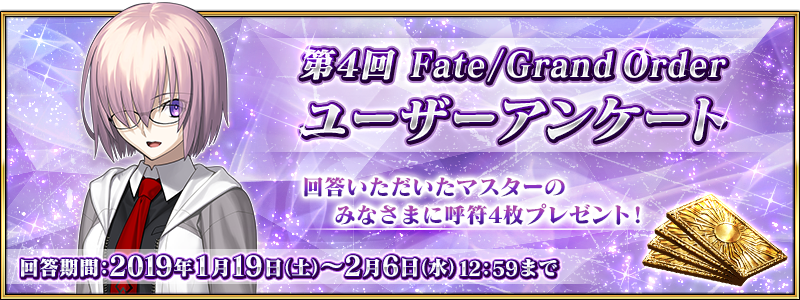

感謝您使用「Fate/Grand Order」。
2019年1月19日(六)在「FGO冬祭 2018-2019 ～移動大馬戲團！～」大阪會場內舉辦的「『Fate/Grand Order』嘉賓訪談 2018-2019」，發表了有關以「Fate/Grand Order」為首的FGO PROJECT及Fate系列的新情報。
以下介紹一部份新情報。
◆記念「『Fate/Grand Order』嘉賓訪談 in FGO冬祭 2018-2019」的舉辦贈送聖晶石10個！◆
為了記念「『Fate/Grand Order』嘉賓訪談 in FGO冬祭 2018-2019」的舉辦，向2019年1月20日(日) AM2:59前通過「特異點F 炎上汙染都市 冬木」的Master贈送聖晶石10個。

■對象期間
2019年1月20日(日) AM3:00～1月23日(三) AM2:59
■贈送內容
聖晶石 10個
■領取條件
2019年1月20日(日) AM2:59前通過「特異點F 炎上汙染都市 冬木」的Master對象
※期間內未登入的話無法領取。
※禮物只能領取1次。
※在上述時間前，在管理室(ターミナル)畫面中的關卡橫幅必須要有「CLEAR」的文字顯示。
◆合作活動「復刻版:魔法少女紀行 ～Prisma・Codes～ -Re-install-」的舉辦發表！◆
發表了合作活動「復刻版:魔法少女紀行 ～Prisma・Codes～ -Re-install-」(以下、本活動)自2019年1月23日(三) 17:00(預定)舉辦。
本活動中來自「Fate/kaleid liner 魔法少女☆伊莉雅!!」的
「美遊・艾蒂菲爾特」在聖晶石召喚做為新期間限定Servant「★4(SR)美遊・艾蒂菲爾特」登場！
另外，「克洛伊・馮・愛因茲貝倫」做為活動限定Servant「★4(SR)克洛伊・馮・愛因茲貝倫」登場。
推進主線關卡，得到「★4(SR)克洛伊・馮・愛因茲貝倫」吧！

◆第4次 Fate/Grand Order 玩家問卷實施的公告◆
以服務提升為目的實施第4次 Fate/Grand Order 玩家問卷。
■問卷回答期間
回答期間:2019年1月19日(六)～2月6日(三) 11:59
※如果回答填寫中期間結束，將無法送出。敬請原諒。
■贈送對象者
上上述期間中完成回答，顯示回答完成頁面的玩家
■贈送内容
呼符 4張
其他線下活動及週邊請參考原公告。
今後也請多多指教「Fate/Grand Order」。